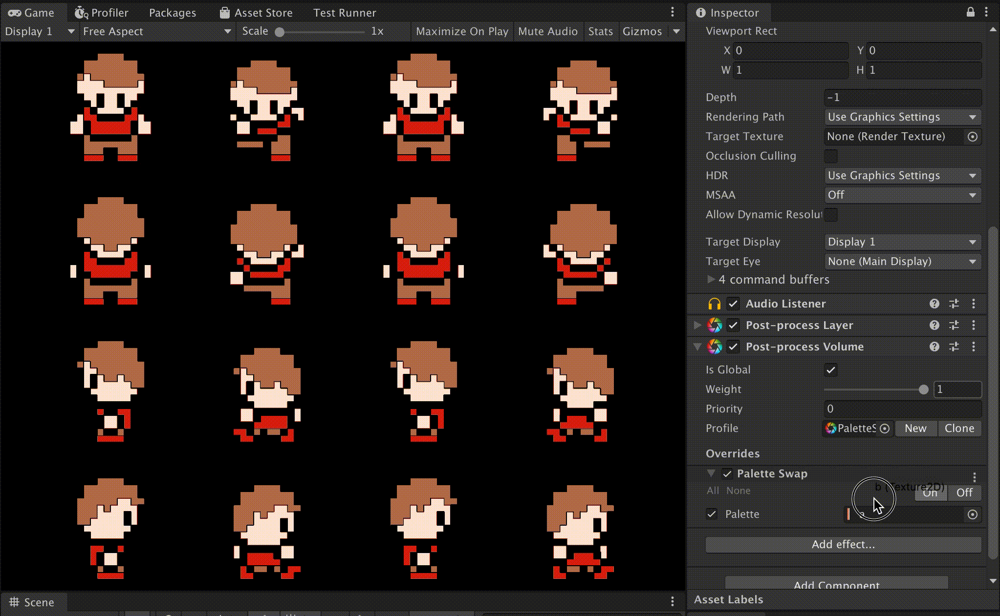

PostProcessingPaletteSwap
https://github.com/kyubuns/PostProcessingPaletteSwap
出来ること

カラーパレットのサンプル

- 例えば8色のパレットなら、↑これを8px x 1pxで保存して突っ込めばオッケー！
- サンプルにもパレット入ってるんですけど、github上で見ると小さすぎて見えないのでめっちゃ拡大して見てください
出来ないこと
- PostProcessでやってるので、こっちのキャラだけ色替え！みたいなのは（ちょっと工夫しないと）出来ません。あくまで画面全体が対象です。